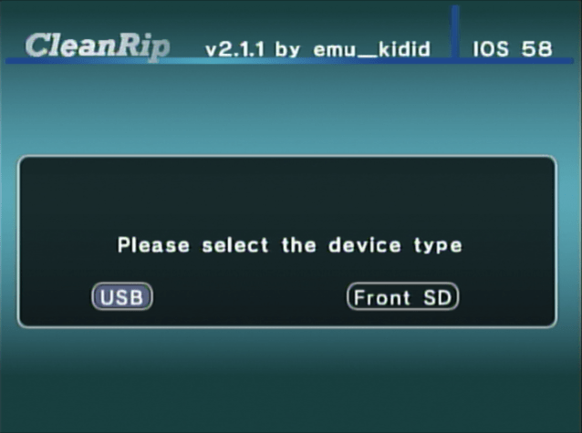
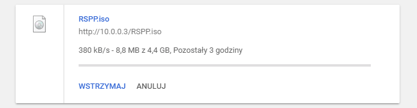

Wii/GameCube-Spiele sichern
Für Unterstützung in englischer Sprache, frag unter folgendem Link nach Hilfe: RiiConnect24 bei Discord.
Möchtest du ein GameCube- oder Wii-Spiel sichern? Es gibt zwei Wege dies zu tun, abhängig von den Werkzeugen, die dir zu Verfügung stehen.
CleanRip-Anleitung
Voraussetzungen
- Eine SD-Karte oder ein USB-Laufwerk mit mindestens 4,7 GB freiem Speicherplatz (8,5 GB beim Kopieren einer Dual Layer Disc).
- CleanRip
Anleitung
Abschnitt 1 - Herunterladen/Installieren
- Entpacke CleanRip und verschiebe es in den
apps-Ordner auf deiner SD-Karte bzw. deinem USB-Laufwerk. - Stecke deine SD-Karte in deine Wii und starte CleanRip über den Homebrew-Kanal.
Abschnitt 2 - Kopieren
- Wähle das Gerät auf welches du das Spiel kopieren möchtest - dein USB-Laufwerk bzw. deine SD-Karte. 
- Auf dem Bildschirm wirst du gefragt, ob du eine Datei mit Prüfsummen herunterladen möchtest, sodass du sicherstellen kannst, dass eine eins-zu-eins-Kopie der Disk erstellt wurde. Es ist deine Entscheidung, die Frage nach dem Download der Datei mit
YesoderNozu beantworten.
- Schiebe nun die Disk, die du kopieren möchtest, ein.


- Stelle es wie unten abgebildet ein.
Solltest du eines der 13 Spiele dieser Liste kopieren, setze Dual Layer auf Yes.

- CleanRip kopiert nun dein Spiel. Dies kann eine Weile dauern, da es die vollen 4,7GB an Inhalt von der Disk kopiert (9,4GB bei Disks mit zwei Schichten).

Ein Spiel über das lokale Netzwerk kopieren
title: “Wii/GameCube-Spiele über ein lokales Netzwerk sichern” —
Voraussetzungen
- Eine Wii.
- DVD Dump Tool
Deine Wii und dein Computer müssen sich im selben lokalen Netzwerk befinden
Anleitung
Abschnitt 1 - Herunterladen/Installieren
- Entpacke DVD Dump Tool und verschiebe es in den
apps-Ordner auf deiner SD-Karte bzw. deinem USB-Laufwerk. - Stecke die SD-Karte in deine Wii und starte DVD Dump Tool vom Homebrew-Kanal.
Abschnitt 2 - Kopieren
- Drücke die rechte Steuerkreuztaste und dann “A”

- Wähle die Disk die du kopieren möchtest (Die Auswahlmöglichkeiten sind:
GameCube Disc,Wii Single-Layer DiscundWii Dual-Layer Disc) und drücke “A”
- Schiebe nun das Spiel in die Wii. (Falls es sich bereits in der Wii befindet, wirf es aus und schiebe es wieder hinein)


- Merk dir die Wii-URL (IP-Adresse)

- Gib nun im Webbrowser auf deinem Computer die Wii-URL ein und drücke die ENTER-Taste.

- Du solltest nun folgendes sehen. Klicke auf
Click here to download XXXX.iso
- Die Übertragungsgeschwindigkeit ist zwar nicht die Beste, aber besser als nichts, wenn für dich nichts anderes in Frage kommt.
